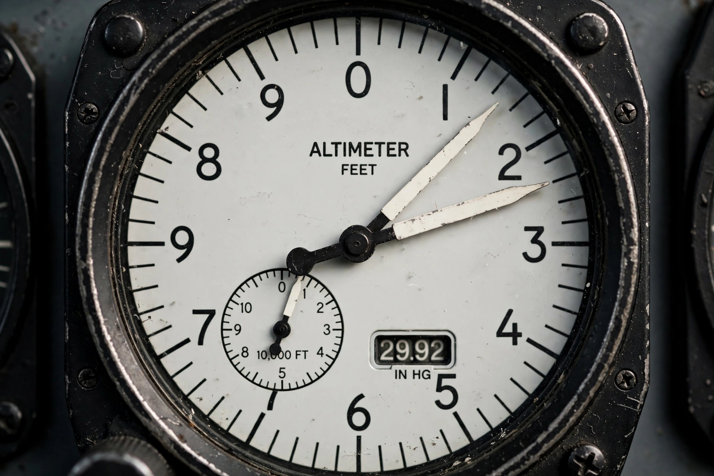

Altimeter
| Altimeter | |
|---|---|
 | |
| A sensitive aircraft altimeter with a Kollsman window for the pressure setting | |
| Uses | Measuring altitude above a reference level, usually sea level |
| Types | Pressure (barometric), radar/radio, GPS, laser |
An altimeter or altitude meter is an instrument used to measure the altitude of an object above a fixed level. The measurement of altitude is called altimetry, which is related to the term bathymetry, the measurement of depth under water. The most common type is the pressure altimeter, an aneroid barometer calibrated to indicate height rather than pressure.
Pressure altimeter
Because atmospheric pressure decreases predictably with height, a sealed aneroid capsule that expands as pressure falls can drive a pointer around a dial graduated in feet or metres. Aircraft altimeters are "sensitive" altimeters adjustable for local barometric pressure via the Kollsman window, using settings such as QNH so that the instrument reads altitude above mean sea level. Above a transition altitude, pilots set the standard pressure of 1013.25 hPa (29.92 inHg) and altitude is reported as a flight level.
Other technologies
Radar (radio) altimeters measure height above the ground directly by timing reflected radio pulses and are used during aircraft approach and landing. Satellite navigation receivers such as GPS compute altitude geometrically from satellite signals, and laser altimeters carried on spacecraft have mapped the topography of the Moon, Mars and Earth. Hikers and skydivers use compact barometric altimeters, the latter often audible in freefall.